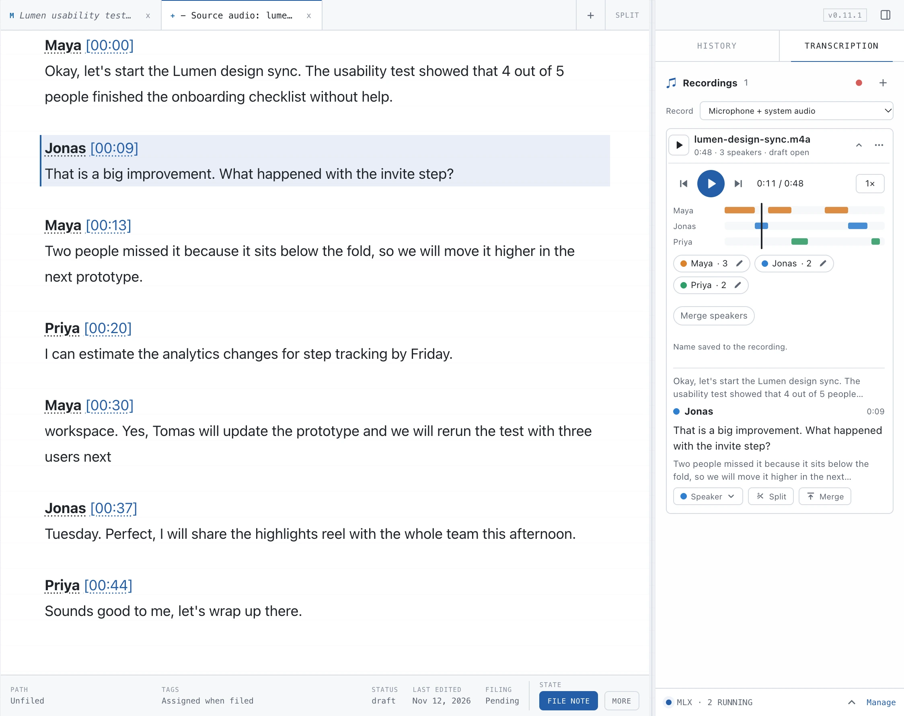

Record a meeting. Know who said what.
Record the microphone, or in the desktop app also system audio, or import a file. Whisper transcribes on your Mac with a [mm:ss] timestamp on every paragraph.
- With the optional Sortformer model, up to 4 speakers are identified on-device
- Rename or merge speakers; names are note variables, so every reference follows
- Play the recording back in sync, jump between turns or solo one speaker
Whisper large-v3-turbo about 1.61 GB, Sortformer about 236 MB. Both are optional downloads. System audio needs macOS 14.2 or later.
